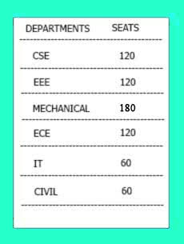
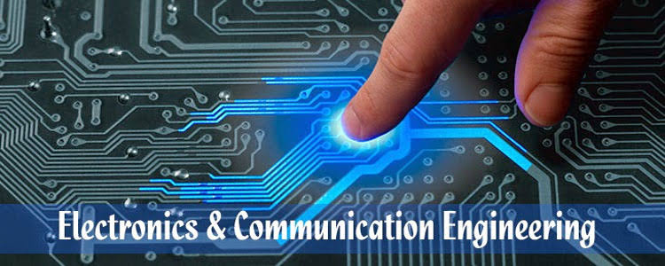

About The Department
"To a common man it's magic, but to an engineer it is engineering"
The Department of Electronics & Communication Engineering has given a facelift to ancient
technology by keeping pace with the current trend. New technology and communication can
improve the quality of life for people moving to the technological extension of consciousness.
The technology has paved way for innovation, illuminating ideas, and guarenteed to whip the
world into a better place.

Department Objectives
Our objective is to see our students as the influential and capable administrators of tomorrow
and to develop them both professionally and personally to thrive in diverse, global and
multidimensional environment.